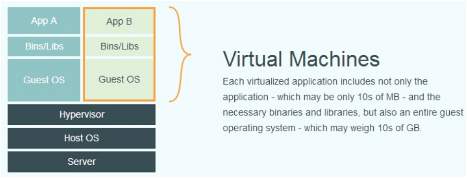
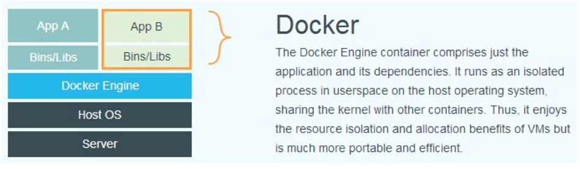
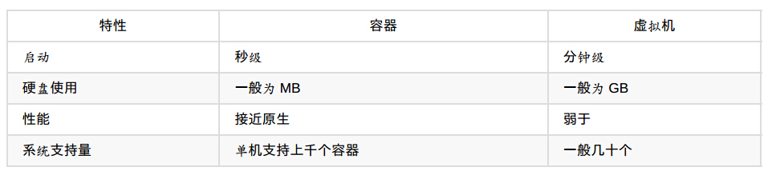
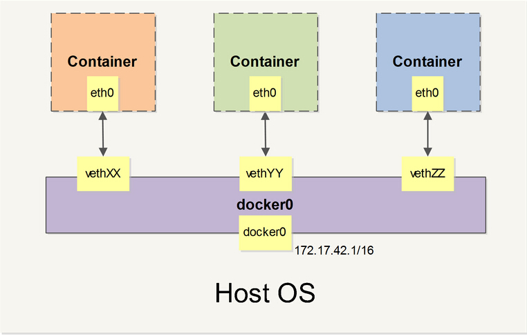

docker是什么?
轻量级内核虚拟化方案, 为什么这么说?
剖析生产环境案例?
虚拟什么? -> 对应硬件技术
| cpu(模拟, 虚拟(完全,半虚拟)) | VT-x |
| memory(进程, 内核, cpu cache) | EPT |
| io(存储, 网络, 显示, 键盘) | IOMMU |
Intel硬件辅助的虚拟化：
CPU: vt-x, EPT, tagged-TLB
IO/CPU: vt-d, IOV, VMDq第一类：跟处理器相关：vt-x
第二类：跟芯片相关：vt-d
第三类：跟IO相关：VMDq和SR-IOV
虚拟化技术的分类?
模拟：著名的模拟器，PearPC, Bochs, QEMU
完全虚拟化：也称为native virtulization
两种加速方式：
BT(binary translation)
HVM(hardware help virtualization)
VMware Workstation, VMware Server, KVM, Xen(HVM)
半虚拟化：para-virtualization
xen, uml(user-mode linux)
OS级别的虚拟化:
OpenVZ, lxc(cgroups)
Solaris (Containers)
FreeBSD (Jail)
Docker(cgroups -> libcontainers)
库虚拟化：
wine
应用程序虚拟化：
jvm


docker所采用的技术?
内核名字空间(netns) -> pid,net,ipc,mntuts,user
容器格式(containers) -> lxc -> libcontainers
控制组(cgroups)
内核能力机制(capability)
联合文件系统(ufs)
优势是什么?

外加部署,环境迁移
劣势是什么?
原生集群方案, 可拓展性
大批量容器管理, 网络
容器稳定性(*)
docker的安装?
要求内核在3.8以上的linux版本, 其他平台参见boot2docker
ubuntu:
sudo apt-get update
sudo apt-get install docker.io
centos6:
sudo yum install docker-io
centos7:
sudo yum install docker
docker三大基本概念?
镜像: 通过裁剪, 下载适于docker的物理文件, 操作系统文件
容器: 物理文件运行起来的一个个实例, 内存中
仓库: 方便进行镜像的迁移, 分享的地方
docker常用命令及演示?
docker pull centos
docker images
docker run -i -t -p 22 centos /bin/bash
docker run -d centos /bin/sshd
docker ps -a
docker rm 容器id
示例: docker rm $(docker ps -a -q)
docker rmi 镜像id
示例: docker rmi $(docker ps -a -q)
docker commit
docker logs 容器id
docker start 容器id / stop / restart
docker attach 容器id
docker login / logout
docker import / load
docker search
docker save
docker tag
docker kill $(docker ps -q)
docker inspect 镜像id
docker使用?
容器创建仓库
1. docker pull registry
2. docker run -i -t -p 5000:5000 registry / docker run -d -p 5000:5000 registry
3. gunicorn –access-logfile - –error-logfile - -k gevent -b 0.0.0.0:5000 -w 4 –max-requests 100 docker_registry.wsgi:application
4. docker push ip地址:5000/镜像名 / 也可以直接从本地pull
本地创建仓库:
1. yum install gcc libgcc swig openssl openssl-devel python-devel libevent-devel python-pip xz-devel
2. pip2.7 install docker-registry
3. sysctl service.registry start
构建web服务
1. sudo docker run –name some-nginx -v /some/content:/usr/share/nginx/html:ro -d nginxdockerfile?
FROM
MAINTAINER
RUN
CMDEXPOSE
ENV
ADD
COPY
ENTRYPOINT
VOLUME
USER
WORKDIR
ONBUILD
dockerfile的示例
* 开胃菜
# dockerfile
FROM centos
MAINTAINER bingwang@cekasp.cn
RUN yum -y update
RUN yum -y install openssh-server
RUN mkdir -p /var/run/sshd
RUN mkdir -p /root/.ssh
RUN ssh-keygen -t rsa -f /etc/ssh/ssh_host_rsa_key
RUN ssh-keygen -t dsa -f /etc/ssh/ssh_host_ecdsa_key
RUN /bin/echo ‘root:cekasp’ | chpasswd
RUN /bin/sed -i ‘s/.*session.*required.*pam_loginuid.so.*/session optional pam_loginuid.so/g’ /etc/pam.d/sshd
EXPOSE 22
CMD /usr/sbin/sshd -D
# shellcmd
docker build -t sshd .
docker run -d -p 10022:22 sshd /usr/sbin/sshd -D
ssh localhost -p 10022* 正餐
# shellcmd
mkdir -p /var/lib/tomcat/webapps/
cd /var/lib/tomcat/webapps/
wget https://tomcat.apache.org/tomcat-7.0-doc/appdev/sample/sample.war
# dockerfile
FROM centos
MAINTAINER bingwang@cekasp.cn
ENV CATALINA_HOME /usr/share/tomcat
ENV CATALINA_BASE /var/lib/tomcat
ENV CATALINA_PID /var/run/tomcat.pid
ENV CATALINA_SH /usr/share/tomcat/bin/catalina.sh
ENV CATALINA_TMPDIR /tmp/tomcat-tmp
RUN yum -y install tomcat jdk
RUN mkdir -p $CATALINA_TMPDIR
VOLUMN [ “/var/lib/tomcat/webapps/” ]
EXPOSE 8080
ENTRYPOINT [ “/usr/share/tomcat/bin/catalina.sh”, “start” ]
# shellcmd
docker build -t name/repo .
docker run -d -p 8080:8080 –name simple name/repo
docker inspect -f “{{ .Volumns }}” sample* 甜点
FROM centos
MAINTAINER bingwang@cekasp.cn
RUN yum -y install wget
VOLUMN [ “/var/lib/tomcat/webapps/” ]
WORKDIR /var/lib/tomcat/webapps/
ENTRYPOINT [ “wget” ]
CMD [ “–help” ]
docker build -t name/repo .
# 重现编排tomcat
docker run –name xxxx –volumes-from name/repo -d -P name/repo
docker portal xxxx 8080* 资料
docker网络?

* network
docker存储?
在运行的容器中添加一个webapp数据卷
docker run -i -t –name web -v /opt/webapp training/webapp python app.py绑定宿主机的一个目录到容器的数据卷
docker run -i -t –name web -v /data01/dbdata:/opt/webapp training/webapp python app.py
# 只读方式挂载
docker run -i -t –name web -v /data01/dbdata:/opt/webapp:ro training/webapp python app.py
# 创建并挂载数据卷
sudo docker run -d –volumes-from web –name db1 training/postgres